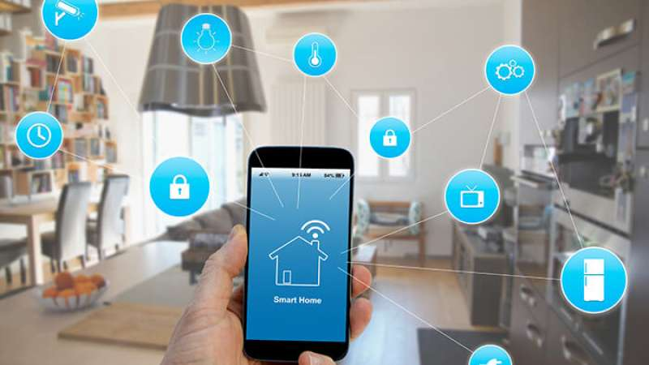

Automação Residencial Inteligente
A automação residencial inteligente é uma inovação tecnológica que transforma a maneira como gerenciamos nossas casas, combinando conforto, praticidade e sustentabilidade. Ao adotar dispositivos inteligentes, como termostatos, lâmpadas e tomadas automatizadas, é possível reduzir significativamente o consumo de energia e outros recursos, promovendo benefícios tanto para o meio ambiente quanto para o bolso.
Vantagens Ambientais
Dispositivos inteligentes, como lâmpadas LED com sensores de movimento e termostatos programáveis, ajudam a evitar desperdícios. Por exemplo, luzes desligam automaticamente quando não há ninguém no ambiente, e a climatização ajusta-se conforme as condições climáticas e a presença de pessoas. Impacto Ambiental: Menor demanda por eletricidade reduz a queima de combustíveis fósseis, diminuindo as emissões de gases de efeito estufa.
Otimização de Recursos: Sistemas automatizados otimizam o uso de água e gás, como chuveiros e irrigadores inteligentes que monitoram o uso e evitam excessos. Isso contribui diretamente para a preservação de recursos naturais.
Vantagens Econômicas
Redução da Conta de Luz: Com sistemas inteligentes, é possível economizar até 30% na conta de energia, ao eliminar o consumo desnecessário de aparelhos em standby e ajustar o uso de iluminação e climatização conforme a necessidade.
Monitoramento e Controle Remoto: Aplicativos conectados permitem gerenciar todos os dispositivos da casa de qualquer lugar, evitando gastos imprevistos e garantindo eficiência. Por exemplo, você pode desligar o ar-condicionado ou as luzes caso tenha esquecido de fazê-lo ao sair de casa.
